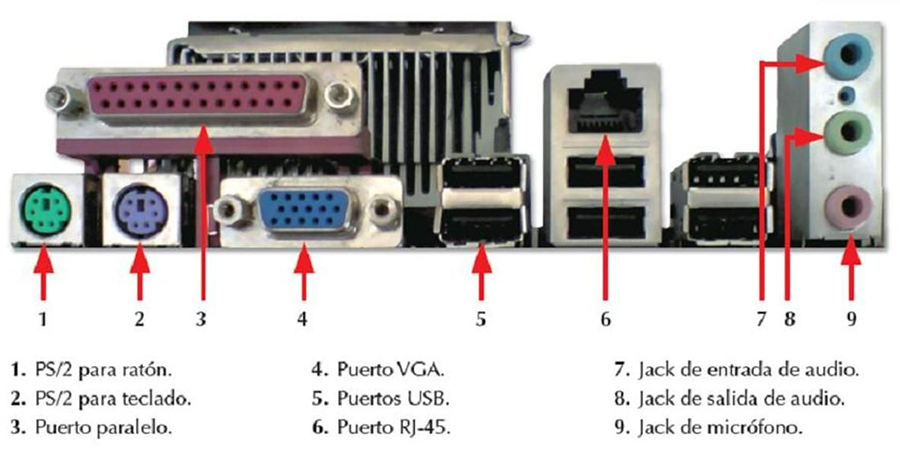

⠀
PUERTOS USB (UNIVERSAL SERIAL BUS): El USB trabaja como interfaz para la transmisión de datos y distribución de energía que ha sido introducido en el mercado y periféricos para mejorar las lentas interfaces serie y paralelo.⠀
PUERTO SERIE: Los dos puertos serie integrados usan conectores tipo D subminiatura de 9 patas en el panel posterior. Estos puertos son compatibles con dispositivos que requieren transmisión de datos en serie (la transmisión de la información de un bit en una línea).⠀
PUERTO RJ-45: RJ-45 es una interfaz física comúnmente usada para conectar redes de cableado estructurado, (categorías 4, 5, 5e y 6). RJ es un acrónimo inglés de Registe red Jack.⠀
PUERTO VGA: El puerto VGA es el puerto estandarizado para conexión del monitor a la PC, es un puerto hembra con 15 orificios de conexión en tres hileras de cinco.⠀
PUERTO PS/2: El conector PS/2 o puerto PS/2 toma su nombre de la serie de ordenadores IBM Personal System/2 que es creada por IBM en 1987, y empleada para conectar teclados y ratones. Muchos de los adelantos presentados fueron inmediatamente adoptados por el mercado del PC, siendo este conector uno de los primeros.⠀
PUERTO DE SONIDO El puerto de audio tiene la función de capturar audio procedente del exterior, grabar señales de audio, reproducir sonido hacia bocinas y capturar la señal del micrófono, consta de un conector cilíndrico con 2 ó 3 terminales que permite la transmisión de datos a un dispositivo externo (periférico), básicamente bocinas y micrófonos, desde la computadora; por ello se le denomina puerto.⠀
Puertos PCI: Utilizadas para conectar a la placa base tarjetas de expansión, esto incluye el sonido, el video, la red, etc. Este tipo de puertos presentan varios tipos de componentes, los cuales hoy en día se siguen utilizando.⠀
